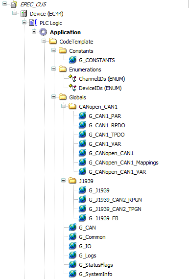
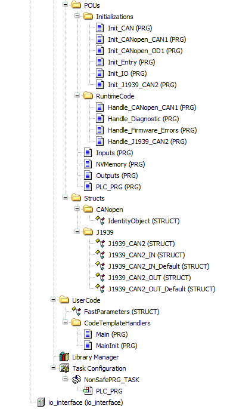

MultiTool Creator automatically creates a code template for CODESYS project when Create CODESYS Project is selected. The code template contains all variable definitions and initialization needed for programming the device.
This topic briefly introduces the code template parts:
MultiTool Creator automatically generates several POUs for the CODESYS project and they will always be overwritten when changes done in MultiTool Creator are imported to the CODESYS project. For this reason, the user application code should never be added to the generated POUs.
E Series code template includes one task for user application.
The entry point of the user application will be a POU called Main. The code template automatically calls the Main program from the PLC_PRG after initialization is done. It is not overwritten by MultiTool Creator. If the Main POU is missing from the application, the CODESYS build command gives and error. The code template in CODESYS 3.5 projects includes a Main POU that is made with ST language. To make the Main POU with another programming language, delete the Main POU and make a new one.
For more information on project programming, see Epec Programming and Libraries Manual.
The CODESYS 3.5 Device tree for E Series in the following image includes all project objects on the same view:


The following table lists the POUs of the code template.
|
POU |
Description |
|
Init_CAN |
CAN bus initializations (low level) |
|
Init_CANopen_CANx |
CANopen initializations (protocol initialization) |
|
Init_CANopen_ODx |
CANopen OD initialization, add indices to OD |
|
Init_Entry |
Read system information |
|
Init_Events |
Event system initialization |
|
Init_J1939_CANx |
J1939 protocol initializations |
|
Handle_CANopen_CANx |
Update CANopen protocols |
|
Handle_Diagnostic |
Run diagnostics, update SystemOk flag |
|
Handle_Firmware_Errors |
Read firmware error log and add errors to application log |
|
Handle_J1939_CANx |
Update J1939 protocol |
|
Inputs |
Read, filter and scale inputs. User should use input values from the outputs of this block |
|
NVMemory |
Handle OD parameter and User values reading and writing to/from non-volatile memory |
|
Outputs |
Write outputs. To control the outputs of the unit, user should write to the inputs of this block |
|
PLC_PRG |
Non-safe program entry point. Handles initializations and run time updates. Calls the user application “Main” |
|
Init_IO |
Initialize the I/O of the unit. |
* CAN bus consecutive numbering, typically 1=CAN1, 2=CAN2 etc.
MultiTool Creator generates global variable and function block instance definitions to (Implicit) Globals lists. These variables and instances can be used, for example, for diagnosing CAN bus and hardware. Code template calls these function blocks automatically. Code template global definitions can be found from the Device tree in CODESYS 3.5 (CodeTemplate > Globals)
Variable definitions are divided into several global lists, defined in the table below.
|
Object |
Description |
|
G_CANx_PAR |
OD variables stored in non-volatile memory, so called application parameters |
|
G_CANx_RPDO |
Variables received in PDO messages |
|
G_CANx_TPDO |
Variables transmitted in PDO messages |
|
G_CANx_VAR |
- parameter stored in volatile memory (RAM parameter) and defined in OD - all the other OD variables that do not belong to any of the other G_CANx groups mentioned above |
|
G_CANopen_CANx |
CANopen related function blocks that the code template uses |
|
G_CANopen_CANx_Mappings |
PDO and SRDO mappings |
|
G_CANopen_CANx_slave_Configurations |
A global variable list for each slave device |
|
G_CANopen_CANx_VAR |
CANopen related variables that the code template uses |
|
G_CAN |
CAN channel definitions |
|
G_Common |
Contains variables common for all CANs, e.g. parameter system handlers and images which are used by code template. |
|
G_Events_CANx |
Application specific events |
|
G_J1939 |
Application J1939 data |
|
G_J1939_CANx_RPGN |
Receive PGN & SPN variables |
|
G_J1939_CANx_TPGN |
Transmit PGN & SPN variables |
|
G_J1939_FB |
J1939 function block instances for code template |
|
G_Logs |
Application code template log using SafeErrorLog library |
|
G_StatusFlags |
Code template flags |
|
G_SystemInfo |
Information about the project and the unit |
* OD's consecutive numbering, typically 1=CAN1, 2=CAN2 etc.
MultiTool Creator creates structures and/or enumerations for
J1939 receive and transmit PGNs
Pre-defined indexes
User defined record indexes
Events
In CODESYS 3.5, Data unit types (DUT) can be found from the Device tree. Enumerations are placed into the Enums and structures into the Structs folder.